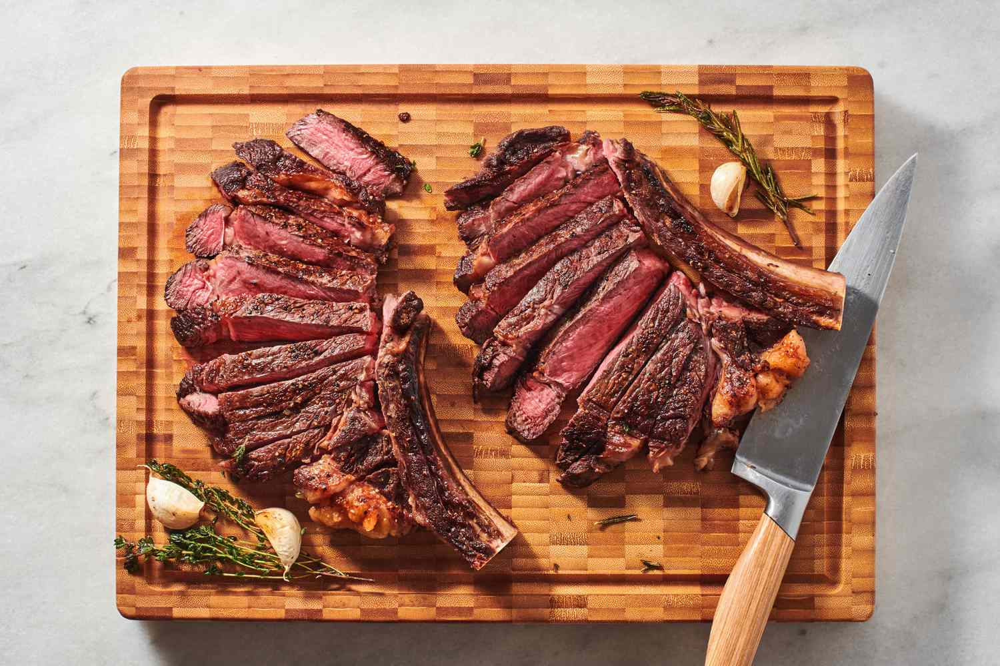

Steak
Description
Steak with Red Wine Sauce is a classic gourmet dish that exemplifies the elegance and robust flavors of French and Italian culinary influences. This indulgent recipe pairs perfectly cooked steak with a rich, velvety red wine sauce, creating a dining experience that is both luxurious and comforting.
Ingredients
For the Steak:
- 2 thick-cut steaks, such as ribeye, New York strip, or filet mignon, about 1 pound (450g) each
- Salt and freshly ground black pepper, to taste
- 2 tablespoons olive oil
- 2 tablespoons unsalted butter
- 2 garlic cloves, smashed (optional)
- A few sprigs of fresh thyme or rosemary (optional)
For the Red Wine Sauce:
- 1 cup red wine, use a good quality red wine such as Merlot, Cabernet Sauvignon, or Pinot Noir
- 1/2 cup beef broth
- 2 tablespoons unsalted butter
- 1 shallot, finely chopped
- 2 garlic cloves, minced
- 1 tablespoon all-purpose flour
- Salt and freshly ground black pepper, to taste
For Garnish (optional):
- Fresh parsley, chopped
- Cracked black pepper
Steps to make Steak with Red Wine Sauce
- Prepare the Steak:
- Pat the steaks dry with paper towels to remove excess moisture. Season generously with salt and pepper on both sides.
- In a large skillet or cast iron pan, heat the olive oil over medium-high heat until shimmering.
- Add the steaks to the hot pan and sear for about 3-4 minutes on each side (for medium-rare), or longer according to your desired doneness. For thicker steaks, you may need to finish them in the oven preheated to 400°F (200°C) after searing, until they reach your preferred internal temperature.
- Optional: Add smashed garlic cloves and fresh thyme or rosemary sprigs to the pan during the last minute of cooking to infuse flavors.
- Make the Red Wine Sauce:
- In the same skillet used for searing the steaks (pour off excess fat if necessary, leaving about 1 tablespoon), reduce the heat to medium.
- Add the chopped shallot and cook until softened, about 2-3 minutes.
- Add the minced garlic and cook for another 1 minute until fragrant.
- Sprinkle the flour over the shallot and garlic mixture, stirring constantly, and cook for 1-2 minutes to create a roux.
- Slowly pour in the red wine, scraping up any browned bits from the bottom of the pan. Simmer until the wine is reduced by half, about 5-7 minutes.
- Stir in the beef broth and simmer for another 5 minutes until the sauce has thickened slightly.
- Remove the skillet from heat and stir in the butter until melted and incorporated into the sauce. Season with salt and pepper to taste.
- Serve:
- Transfer the steaks to serving plates and spoon the red wine sauce over the top.
- Garnish with chopped fresh parsley and cracked black pepper, if desired.
- Serve immediately, accompanied by your choice of side dishes such as roasted potatoes, grilled vegetables, or a simple green salad.
Tips
- Steak Doneness: Use a meat thermometer to ensure your steak reaches your desired level of doneness.
- Red Wine: Choose a red wine that you enjoy drinking, as the flavors will concentrate in the sauce.
- Resting Time: Allow the steaks to rest for a few minutes before slicing to retain juices and ensure tenderness.
Enjoy this gourmet steak with red wine sauce for a special dinner that combines the richness of steak with the complex flavors of a luxurious red wine sauce!